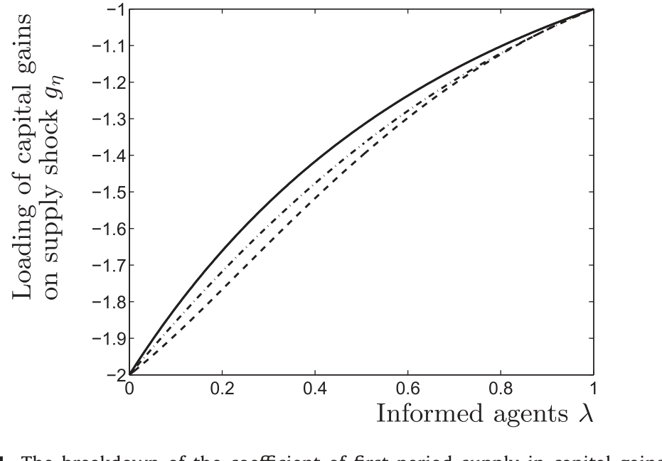
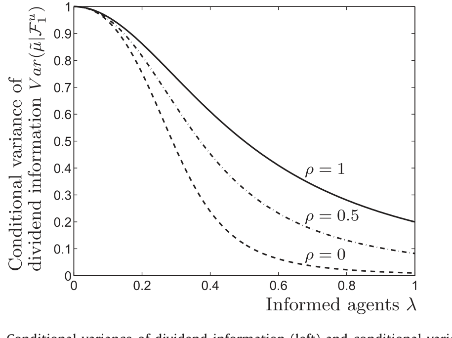
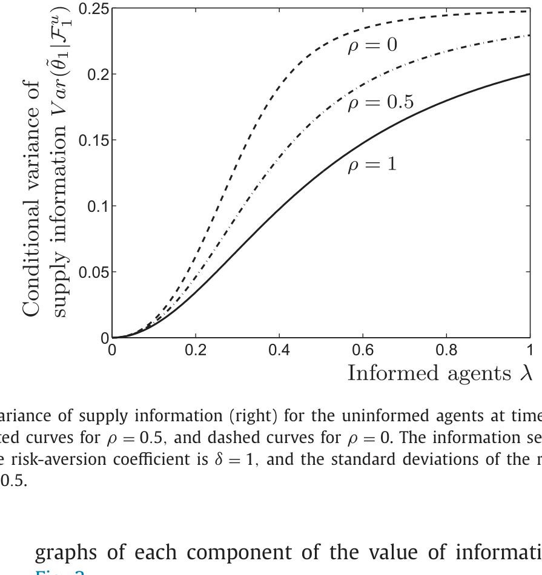
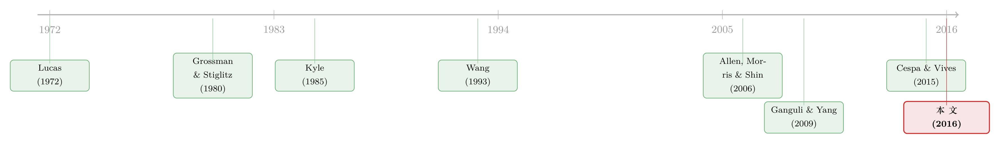

当「噪声」开始说话：动态市场里，越多人知情反而越想知情
本文读的是 Avdis (2016, Journal of Financial Economics)：在一个动态金融市场里，资产的随机供给不再只是静态模型里那团「噪声」，它同时携带了关于风险溢价（贴现率）的信息。于是，购买股利私有信息会附带一个好处——帮你把价格里的股利信息和贴现率信息拆开。这让信息获取出现了互补性（complementarity）：随着知情者增多，价格对股利更透明、对贴现率却更模糊，反而可能让其他人更愿意花钱买信息。结果是信息市场出现多重均衡。
1 一个被忽略了三十多年的角色
先从一个几乎所有人都背得出的结论说起。
Grossman 和 Stiglitz (1980) 告诉我们：信息是有「替代性（substitutability）」的。一个投资者要不要花钱去打听某只股票的基本面，取决于已经有多少人打听过了。知情的人越多，价格就越能反映基本面，搭便车看价格的人就越省心，于是私有信息越来越不值钱。这条「越多人知情、信息越不值钱」的负向关系，是整个理性预期信息获取理论的基石。
但这条结论藏着一个不起眼的前提：市场是静态的。投资者只关心资产最终会付多少股利，价格的全部信息含量，就由「价格对股利有多透明」这一件事完全刻画。
可现实中的投资者并不只关心终值。他们还关心持有期间价格会怎么变——也就是资本利得（capital gain）。一旦把交易做成动态的，问题就变了味：投资者不仅要学股利，还要学未来的贴现率。而本文最漂亮的一步，就是发现——在动态市场里，告诉你未来贴现率的，恰恰是那个在静态模型里被当作「噪声」扔掉的东西：资产的随机供给（stochastic supply）。
一句话直觉：如果供给是均值回复（mean-reverting）的，那么「今天供给很高」就预示着「明天供给会下降」。供给的水平因此预测了供给的变化，也就预测了资本利得。供给不再是噪声，而是一张写着风险溢价的便条。
这正是 Campbell 和 Kyle (1993)、Wang (1993) 早就点破的事：投资者承担的风险量与随机供给成正比，所以供给的动态，本质上就是条件风险溢价的动态。本文做的，是把这条「供给即风险溢价」的洞见，第一次塞进信息获取的决策里，看看会发生什么。
2 模型设定：两期交易，一次决断
模型的骨架极简，但每个零件都不可省。
经济里有一个连续统的、事前同质的投资者，总质量为 1，都是常绝对风险厌恶 (constant absolute risk aversion, CARA) 偏好，系数为 \(\delta\)。初始财富 \(W_0\)，可投入零净收益的安全储蓄，或投入一只风险股票。
时间线是这样的：
- \(t=0\)：信息获取期。每个人决定要不要花 \(\kappa_0\) 去观测股利信息 \(\tilde\mu\)。买了就成为「知情者（informed, \(i\)）」，不买就当「不知情者（uninformed, \(u\)）」，靠看价格学习。这个决定一次做出、终身不变——这是为了可解性做的关键简化。
- \(t=1,2\)：两期交易，但不消费。
- \(t=3\)：清算消费，股利付出。
股利只在 \(t=3\) 支付，且由两部分构成：
$$D_3 = \tilde\mu + \tilde\zeta,\qquad \tilde\mu\sim N(0,\sigma_\mu^2),\quad \tilde\zeta\sim N(0,\sigma_\zeta^2)$$
其中 \(\tilde\mu\) 与 \(\tilde\zeta\) 独立，\(\tilde\mu\) 是「可被打听到的那部分」，在两期之间不变（代表持久的股利信息）；\(\tilde\zeta\) 是谁也学不到的纯噪声。不知情者的先验是 \(D_3\sim N(0,\sigma_\mu^2+\sigma_\zeta^2)\)。
真正的主角是供给。第一期供给 \(\tilde\theta_1\sim N(0,\sigma_\theta^2)\)，而第二期供给服从一个 AR(1)：
$$\tilde\theta_2 = \rho\,\tilde\theta_1 + \tilde\eta,\qquad 0\le\rho\le 1,\quad \tilde\eta\sim N(0,\sigma_\eta^2)$$
这里的 \(\rho\) 就是供给的持续性（persistence）。\(\rho\) 越小，均值回复越强，「今天的水平」对「明天的变化」就越有预测力；\(\rho=1\) 时供给变成随机游走，水平不再预测变化。请记住这个 \(\rho\)，全文的反转都系在它身上。
3 价格里装了什么：一个加权平均
接下来是构造均衡的核心。作者用「猜测—验证」的办法，先猜价格对状态变量是线性的：
$$P_1 = p_\mu\,\tilde\mu + p_\theta\,\tilde\theta_1 + p_{\hat\mu}\,\hat\mu_1 + p_{\hat\theta}\,\hat\theta_1$$ $$P_2 = q_\mu\,\tilde\mu + q_\theta\,\tilde\theta_2 + q_{\hat\mu}\,\hat\mu_2 + q_{\hat\theta}\,\hat\theta_2$$
其中 \(\hat\mu_t,\hat\theta_t\) 是不知情者在 \(t\) 期对 \(\tilde\mu,\tilde\theta_t\) 的估计。把这条价格方程看懂，整篇文章就懂了一大半。我们把第一期的价格拆给你看：
由于 \(\hat\mu_1,\hat\theta_1\) 在均衡里都是已知的常数，不知情者从 \(P_1\) 里真正能榨出的「新信息」，是下面这个价格信号（price signal）：
$$y_1 = p_\mu\,\tilde\mu + p_\theta\,\tilde\theta_1$$
把它归一化，就得到全文最关键的一个量：
$$\frac{1}{p_\theta}\,y_1 = p_{\mu\theta}\,\tilde\mu + \tilde\theta_1,\qquad p_{\mu\theta}\equiv \frac{p_\mu}{p_\theta}$$
看清楚了吗？价格信号是 \(\tilde\mu\) 和 \(\tilde\theta_1\) 的一个加权平均，权重就是 \(p_{\mu\theta}\)。这个比值衡量「价格信息对股利信息的敏感度」。同理第二期有 \(q_{\mu\theta}=q_\mu/q_\theta\)。
于是问题被压缩成了一句话：这两个权重 \(p_{\mu\theta}\)、\(q_{\mu\theta}\) 怎么随知情者比例 \(\lambda\) 变化？
4 两个权重，两段证明
作者在 Proposition 3.2 给出了答案，而且第二期的答案干净得惊人：
$$q_{\mu\theta} = -\,\delta\,\sigma_\zeta^2 \tag{Prop 3.2(i)}$$
第二期的敏感度是个常数，完全不依赖 \(\lambda\)。直觉是：到了 \(t=2\)，故事只剩一期就要落幕，价格塌缩成「风险厌恶 \(\delta\) 乘以不可学的股利噪声方差 \(\sigma_\zeta^2\)」，与有多少人知情无关。
第一期就没这么轻松了。\(p_{\mu\theta}\) 是下面这条三次方程的解：
$$\gamma_3\,p_{\mu\theta}^3 + \gamma_2\,p_{\mu\theta}^2 + \gamma_1\,p_{\mu\theta} + \gamma_0 = 0$$
其中系数 \(\gamma_i\) 是 \(q_{\mu\theta}\) 的 \(4-i\) 阶多项式（具体形式见原文附录 B）。Proposition 3.3 证明：均衡总存在；其中总有一个满足「\(\lambda=0\) 时 \(p_{\mu\theta}=0\)、\(\lambda>0\) 时 \(p_{\mu\theta}<0\)」；并且当该三次方程的判别式非正时，线性均衡唯一。也就是说，多重均衡的可能性，是从这条三次方程的判别式里冒出来的。
Lemma 3.4 又补了一刀：两个敏感度在原点的导数相等，
$$\left.\frac{d\,p_{\mu\theta}}{d\lambda}\right|_{\lambda=0} = \left.\frac{d\,q_{\mu\theta}}{d\lambda}\right|_{\lambda=0}$$
这意味着在知情者很少时，\(p_{\mu\theta}\) 和 \(q_{\mu\theta}\) 大致相等——两期的信息含量「同起同坐」。
5 真正关键的一步：供给系数的分解
现在，把镜头对准资本利得。不知情者要预测 \(P_2-P_1\)，他需要知道未来供给 \(\tilde\theta_2=\rho\tilde\theta_1+\tilde\eta\)，而这又要他先知道 \(\tilde\theta_1\)。问题在于：价格信号是 \(p_{\mu\theta}\tilde\mu+\tilde\theta_1\) 这么个混合体，要从里面分离出 \(\tilde\theta_1\)，你必须先知道 \(\tilde\mu\)。
于是反转出现了：只有先掌握了股利信息 \(\tilde\mu\) 的人，才能把供给水平 \(\tilde\theta_1\) 从价格里干净地解出来，进而读懂未来的资本利得。这就是「买股利信息」会附带「读懂贴现率」这一额外好处的微观来源。如图 4 所示，作者把第一期供给在资本利得中的系数做了分解，正是为了把这条「供给→贴现率」的暗线显式地拆出来。

Figure 4: The breakdown of the coefficient of first-period supply in capital gains
接着，一个自然的问题是：随着 \(\lambda\) 上升会怎样？两股力量同时启动——
- 更多人知情 → 市场里有更多股利信息 → 价格对股利更透明 → 股利信息在价格中的权重上升；
- 与此同时，供给信息的权重相应下降 → 价格变成供给（也就是贴现率）的更模糊的信号。
把这两件事画在一起，就是图 2：左边是关于股利信息的条件方差，右边是关于贴现率/供给信息的条件方差，它们随 \(\lambda\) 一升一降，活脱脱一个此消彼长的权衡（tradeoff）。

Figure 2: Conditional variance of dividend information (left) and conditional
6 于是，互补性诞生了
把上面两股力量翻译成「愿不愿意为股利信息掏钱」，就得到本文的第一个主结论。
一方面，价格对股利更透明，让人更不愿意买信息——这是 Grossman-Stiglitz 那条老规律，替代性。另一方面，价格对供给更模糊，意味着价格对条件风险溢价更不透明；而前面说过，你只有知道 \(\tilde\mu\) 才能从价格里反推供给水平——于是这让人更愿意买信息。
当价格里的股利信息本就很少时，后一股力量占上风，「别人变得知情」反而成了「我去获取信息」的互补品。这就是 Avdis 的第一个主结果：
在动态金融市场里，私有信息的价值可以随知情者数量的增加而上升。
这与静态模型里那条人人熟知的负向关系截然相反。把信息的价值（或对信息的总需求）画成 \(\lambda\) 的函数，曲线可以是上升的；它与信息成本 \(\kappa_0\) 的水平线可以相交不止一次，于是信息市场出现多重均衡——经济可能停在「人人不知情」，也可能停在「大量人知情」，全看预期如何自我实现。

Figure 3
值得一提的是，这种「越多人买、价格越笨、所以我越想买」的搭便车逻辑反转，与被动投资文献里「搭便车的人越来越多、价格却没变笨」的讨论形成了有趣的对照（可参见《搭便车的人越来越多，价格却没有变笨》）。
7 反转的反转：\(\rho\) 说了算
第二个主结论，是把全部戏剧性都押回到那个供给持续性 \(\rho\) 上。
互补性之所以存在，全靠「供给水平能预测资本利得」。可这件事只有在供给均值回复时才成立。\(\rho\) 越接近 1，贴现率的变化越不可预测，供给那张「便条」上写的字就越模糊，互补性也就越弱。到了极端的随机游走情形 \(\rho=1\)，作者直接给出了一个干净的命题：
$$\rho=1 \;\Longrightarrow\; p_{\mu\theta}=q_{\mu\theta}\quad\text{对每个 }\lambda \tag{Prop 3.5}$$
两期的信息含量永远相等，供给的「贴现率角色」彻底消失。此时对信息的总需求随知情者增多而下降——一切退回到静态的 Grossman-Stiglitz 世界。
这给文献提了个醒：随机游走 vs. AR(1) vs. i.i.d. 供给，这些看似无关痛痒的建模假设，会定性地改变信息获取的结论。你假设供给是随机游走（如 Kyle 1985、Vives 1995），就先验地把互补性排除在外了。
8 信息的价值，是两段学习的和
为什么这个机制能用一个封闭解讲清楚？因为 CARA-正态的结构，让信息的事前确定性等价价值，恰好等于一串条件方差之比的对数。本文最优美的地方，是这个价值天然地分成两段：
$$\psi_0 = \frac{1}{2\delta}\log\frac{\operatorname{Var}(P_2-P_1\mid\mathcal{F}_1^u)}{\operatorname{Var}(P_2-P_1\mid\mathcal{F}_1^i)} + \frac{1}{2\delta}\log\frac{\operatorname{Var}(D_3-P_2\mid\mathcal{F}_2^u)}{\operatorname{Var}(D_3-P_2\mid\mathcal{F}_2^i)}$$
第一项是资本利得 \(P_2-P_1\) 上的学习优势——这一段，正是供给/贴现率信息在起作用；第二项是终期股利 \(D_3-P_2\) 上的学习优势——这一段，是传统的股利信息在起作用。\(\mathcal{F}_t^i\)、\(\mathcal{F}_t^u\) 分别是知情者与不知情者的信息集。静态模型只有第二项，所以永远只看得见替代性；动态模型多出第一项，互补性才有了藏身之处。这就是「动态」二字的全部分量。
9 文献脉络
这条线的源头，是 Lucas (1972) 开创、Green (1973)、Grossman (1976, 1978)、Kihlstrom 和 Mirman (1975)、以及 Grossman、Kihlstrom 和 Mirman (1977) 一路夯实的噪声理性预期传统。它在 Grossman 和 Stiglitz (1980) 那里结出了信息获取理论的标准答案——替代性。
接着，一支文献开始研究动态市场：Campbell 和 Kyle (1993)、Wang (1993, 1994)、He 和 Wang (1995) 用 AR(1) 供给把「供给≈风险溢价」写了进去；另一支（Kyle 1985；Brown 和 Jennings 1989；Grundy 和 McNichols 1989；Vives 1995）则用随机游走供给；Allen、Morris 和 Shin (2006) 用 i.i.d. 供给。这些不同的供给假设，本文证明，会通向定性不同的结论。
与此同时，信息获取互补性这条线也在生长：Veldkamp (2006) 靠信息生产部门的固定成本，García 和 Strobl (2011) 靠相对财富偏好，Ganguli 和 Yang (2009)、Manzano 和 Vives (2011) 靠供给信号，Breon-Drish (2015) 靠非正态收益，Mele 和 Sangiorgi (2015) 靠模糊厌恶，Goldstein、Li 和 Yang (2014) 靠分割市场——各自往经济里额外加料来制造互补性。Avdis 这篇的位置很清楚：什么料都不加，只把交易做成动态的，互补性就自己冒出来了。与它最近的 Cespa 和 Vives (2015) 研究的是持续噪声供给对金融市场均衡的影响，而本文落在信息市场。

10 评论与延伸（Q&A + 研究方向）
(a) 几个可能的疑问
Q：互补性和「供给信息」到底谁是因、谁是果？这跟 Ganguli-Yang 的供给信号有何不同？
关键区别在于「额外加料」与否。Ganguli 和 Yang (2009) 是给投资者额外塞进一个关于供给的私有信号来制造多重均衡；本文里没有任何外生的供给信号，互补性纯粹源于「供给在动态市场里内生地携带了贴现率信息」这一点。换句话说，前者是把互补性当假设的输入，后者是把它当动态交易的输出。
Q：第二期敏感度 \(q_{\mu\theta}=-\delta\sigma_\zeta^2\) 为什么是常数，与 \(\lambda\) 无关？
因为 \(t=2\) 之后只剩一期清算，没有「未来价格」可学了，动态那一层学习消失，价格退化为静态的「风险厌恶 × 不可学噪声方差」。所有动态戏码都集中在第一期的 \(p_{\mu\theta}\) 上，这也是为什么全部复杂性（三次方程、判别式、多重均衡）都长在第一期。
Q：多重均衡是模型的「bug」还是「feature」？
是 feature。多重均衡恰恰是互补性的标志——当个体获取信息的激励随他人决策同向变动，自我实现的预期就会撑起多个均衡。本文把多重性的条件精确地落到三次方程判别式的符号上，这比「定性地说存在互补就可能有多重均衡」要扎实得多。
Q：「一次性、终身不变」的信息决策是不是太强了？
这是为闭式解付出的代价，作者也坦承。它排除了「边交易边学、再决定要不要补买信息」这类更丰富的动态。好消息是，补充的网络附录把模型推广到了连续时间、无穷期、带中间消费与一般 AR 股利过程的版本，主结论仍然成立——说明结果不是两期设定的人造产物。
Q：这套理论能落到哪个可观测现象上？
作者给的实证落点是分析师覆盖。模型预测：分析师覆盖的发起（initiation）可能与既有覆盖正相关（互补）。已有证据既有支持互补（Chen 和 Ritter 2000；Das、Guo 和 Zhang 2006 等），也有反对（Bradley、Jordan 和 Ritter 2008），本文建议去条件风险溢价均值回复的时期里找互补性，这是一个可检验的、带方向性的预测。
Q：把「单一资产」换成「多资产」，结论还成立吗？
作者说成立，只要能论证存在关于风险溢价（市场层面经济力量）的非对称信息。Albuquerque、De Francisco 和 Marques (2008) 对纽交所强烈拒绝「无市场层面私有信息」的原假设；Albuquerque、Bauer 和 Schneider (2009) 发现跨八个发达市场，一个全球共同因子解释了约
50%的私有信息交易变异。这些为「市场层面私有信息」提供了经验支撑。
(b) 几个可能的研究问题与提案
1. 把这套「供给即贴现率」机制搬到公司债市场。 【经济故事】公司债的「供给冲击」（一级市场发行节奏、做市商库存、共同基金赎回引发的抛售）很可能比股票更接近一个均值回复、且与条件风险溢价高度相关的过程；那么「掌握信用基本面的投资者更能从价格里读出供给/流动性溢价」这条互补逻辑，在信用市场应当更显眼。【可行性】中。识别上可用 TRACE 成交 + 发行日历 + 基金流构造供给代理，难点是把「私有信用信息」与「公开信息」干净分开。
2. 外资持有人会不会就是那个「供给的搬运工」？ 【经济故事】外资在新兴或在岸信用市场的进出，往往带有强烈的均值回复与风险偏好周期色彩。若外资流构成了本文意义上的「携带贴现率信息的供给」，那么本地知情投资者的信息获取就可能随外资参与度呈互补。【可行性】中。需要分国别的外资持仓面板与本地分析师/机构信息活动代理；识别可借助资本流动管制变化或指数纳入事件做外生冲击。
3. 用分析师覆盖发起检验「互补只在均值回复期出现」。 【经济故事】本文给了一个尖锐的条件预测：互补性只在条件风险溢价均值回复较强的时段显现，在风险溢价近似随机游走时退回替代。【可行性】高。I/B/E/S 覆盖发起数据现成，难点是构造「风险溢价持续性」的时变代理（如用宏观状态变量或已实现的溢价 AR 系数滚动估计），再做覆盖发起对既有覆盖的交互回归。
4. 把信息决策从「一次性」放开为「序贯」，看多重均衡是否幸存。 【经济故事】现实中投资者会边看边补买信息。序贯信息获取会不会熨平互补性、消灭多重均衡，还是反而放大它？【可行性】低到中。主要是理论工作，需在动态规划里嵌入内生的、可重复的信息购买，闭式解大概率丢失，得靠数值求解。
5. 流动性危机中的「互补性崩塌」。 【经济故事】危机时供给冲击的持续性结构可能突变（从均值回复转向类随机游走的持续抛压）。按本文逻辑，这会让信息获取从互补转为替代，知情者集体退场，价格信息含量骤降。【可行性】中。可结合公司债危机期数据（关于这一点，可参见《差点死掉的那个市场：一场公司债流动性危机的微观解剖》）刻画供给持续性的状态切换，再看信息生产代理是否同向坍缩。
11 我的判断
这篇论文的贡献是「以最少的假设换最强的反转」。它没有给投资者塞额外信号、没有动用非正态或模糊厌恶，仅仅把 Grossman-Stiglitz 做成两期交易，就让信息获取的替代性翻转成了互补性，并把多重均衡的条件精确地落到一条三次方程的判别式上。把「随机供给在动态市场里携带贴现率信息」这件被 Campbell-Kyle、Wang 讲过的事，第一次端到信息市场的桌面上，这是干净而深刻的一手。它也顺手给文献提了个醒：你对供给持续性 \(\rho\) 的随手假设，可能正悄悄决定了你的定性结论（这一关切，与「分歧/信息质量在变才是关键」的实证讨论遥相呼应，见《分歧本身没那么重要，重要的是「信息质量」在变》）。
要说担忧，主要是两点。其一，「信息决策一次性、终身不变」这个简化虽换来了闭式解，却也回避了动态市场里最有意思的「边交易边学、再决定补不补仓信息」的反馈；网络附录的连续时间推广缓解了对结论稳健性的疑虑，但没真正打开这扇门。其二，全部识别都押在「供给均值回复」这一假设上——可供给的持续性本身是不可直接观测的，这恰是把理论拉到数据时最脆弱的一环：如果你估错了 \(\rho\)，互补与替代的结论会整个翻面。
后续我最想看到的，是有人把这条机制拉到信用市场或外资持有人的真实数据上，用可观测的供给代理去估那个决定一切的 \(\rho\)，并直接检验「互补性只在均值回复期出现」这个本文给出的、难得带方向性的预测。理论已经把球传到了门前。
参考文献
- Avdis, E. (2016). Information tradeoffs in dynamic financial markets. Journal of Financial Economics 122(3), 568–584.
- Albuquerque, R., Bauer, G.H., Schneider, M. (2009). Global private information in international equity markets. Journal of Financial Economics 94(1), 18–46.
- Albuquerque, R., De Francisco, E., Marques, L.B. (2008). Marketwide private information in stocks: forecasting currency returns. The Journal of Finance 63(5), 2297–2343.
- Allen, F., Morris, S., Shin, H.S. (2006). Beauty contests and iterated expectations in asset markets. Review of Financial Studies 19(3), 719–752.
- Campbell, J.Y., Kyle, A.S. (1993). Smart money, noise trading and stock price behaviour. The Review of Economic Studies 60(1), 1–34.
- Cespa, G., Vives, X. (2015). The beauty contest and short-term trading. The Journal of Finance 70(5), 2099–2154.
- Ganguli, J.V., Yang, L. (2009). Complementarities, multiplicity, and supply information. Journal of the European Economic Association 7(1), 90–115.
- Grossman, S.J., Stiglitz, J.E. (1980). On the impossibility of informationally efficient markets. The American Economic Review 70(3), 393–408.
- Kyle, A.S. (1985). Continuous auctions and insider trading. Econometrica 53(6), 1315–1335.
- Lucas, R.E. (1972). Expectations and the neutrality of money. Journal of Economic Theory 4(2), 103–124.
- Veldkamp, L. (2006). Media frenzies in markets for financial information. The American Economic Review 96(3), 577–601.
- Wang, J. (1993). A model of intertemporal asset prices under asymmetric information. The Review of Economic Studies 60(2), 249–282.